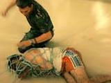

De: La Frikipedia, la enciclopedia extremadamente seria.
De: La Frikipedia, la enciclopedia extremadamente seria. De: La Frikipedia, la enciclopedia extremadamente seria.
| Creíble. Este artículo o sección es demasiado creíble para poder permitírsele el paso. Por favor, el autor, o alguien que pase por aquí, meta alguna locura humorística, para terminar de reírme. |

|
|  | ATENCIÓN Este artículo es simple y llanamente malo. El autor tiene un humor de díficil comprensión para los frikipedistas en general o es que realmente no tiene ni puta gracia. Si crees que puedes mejorarlo inténtalo. |

|
ATENCIÓN El autor de este artículo pide una ayudita. Porque es más triste de robar que de pedir. Se le han terminado las ideas y pide de rodillas a los frikipedistas (más listos, inteligentes y guapos que él) que le ayuden a terminar o mejorar su obra. |
| De la serie monstruos mitológicos: | |||
| Ghost Rider | |||
| |||
| Nombre Científico | El Motorista fantasma | ||
| Hábitat | las calles | ||
| Organización | de fuego puro | ||
| Actividad | Correr por las noches con su moto | ||
| Dieta | Valanciada | ||
| Inteligencia | Inteligencia pro medio | ||
| Aparición | en pelis | ||
| Número aproximado | 12 | ||
| Armadura | Un chaleco con púas a sus hombros c: | ||
| Ataques | Quemar a la gente y matarlos a balazos con su escopeta | ||
| Moral | LoL | ||
| Notas | Aquí cuando esta en modo ardiente c: | ||
«¡IRÁN AL INFIERNO MUAJAJAJA!»
~ Ghost Rider Diciéndote que iras al infierno.
John Blaze era un joven que acabó huérfano cuando su padre, Barton Blaze, la estrella de los Crash Simpsons Daredevil Cycle Show, murió realizando una maniobra peligrosa. Adoptado por Crash Simpson, uno de los compañeros de su padre el joven rápidamente dominó los trucos del negocio. Cuando descubrió que su padre adoptivo estaba muriéndose de una rara enfermedad sanguínea, Blaze finalmente encontró la oportunidad para utilizar su fascinación por lo oculto. Jugando con fuerzas ocultas más allá de las ligaduras de la comprensión humana, Blaze recreó un antiguo ritual y vendió su alma a un demonio por una cura milagrosa para su padre.
Luego Simpson fue curado pero encontró su muerte un tiempo después intentando la acrobacia más ambiciosa de su carrera. Tras haber embaucado a Blaze para que perdiera su alma, el Demonio se materializó para reclamar la deuda. Pero la hija de Crash, Roxxane Simpson, expulsó el demonio del plano mortal recitando un conjuro de desvanecimiento que había buscado en uno de los libros de Blaze.
Al ser incapaz de tomar posesión del alma de Blaze, Mefisto trasladó el alma del demonio Zarathos al cuerpo de Blaze. A partir de entonces, la mezcla de espíritus se manifestaría cada noche en la forma del Ghost Rider, que usaba sus poderes demoníacos para crear una motocicleta de aspecto demoníaco. Al principio, Blaze dominaba la personalidad del Ghost Rider, y después de unos pocos meses, sus automáticas trasformaciones nocturnas finalizaron. Entonces se convertía en Ghost Rider siempre que sentía maldad en su cercanía, vengando vidas inocentes que habían sido perjudicadas por la maldad. Pero cuanto más Blaze se convertía en Ghost Rider, más fuerte era el demonio.
Blaze estuvo condenado a llevar una doble vida. Durante años, él y Zarathos luchaban para controlar su entidad compuesta. Durante todo el tiempo, Blaze se esforzaba para prevenir que su segunda personalidad satánica lo controlara. Con el tiempo, se exorcizó a Zarathos del cuerpo de Johnny Blaze, y la mitad humana del Ghost Rider finalmente consiguió una existencia pacífica.
Años después, Blaze se encontró anhelando la emoción de su antigua vida, una parte de si mismo añoraba al Ghost Rider y sus aventuras juntos. Luego un más viejo y más sabio Johnny Blaze realizó un trato con el Espíritu de la Venganza. Y así el Ghost Rider vaga por las autopistas de América, castigando a las personas que han hecho mal a otros.
Zarathos fue un demonio que anteriormente era un ángel en el cielo. En una ocasión, cuando la Tierra recién había sido creada, fue convocado por un profeta que acordó que tomaría almas en el nombre de Dios. De este modo, mientras el profeta captaba almas para el ángel, Zarathos se iba haciendo más fuerte, hasta el punto que llegó a rivalizar con el demonio Mefisto. Esto, por supuesto, indignó a este último, por lo que concibió un plan. Así, robó el alma de un hombre llamado Centurius y le ordenó que hiciera frente a Zarathos. Cuando éste fue a arrebatarle el alma durante la lucha, se vio incapaz de hacerlo porque Centurius ya la había perdido. Fue entonces cuando emergió Mefisto desde el infierno y ambas criaturas se enzarzaron en una batalla que ganó este último. Fue de este modo como Zarathos acabó sirviendo a Mefisto.
Siglos después Mefisto hizo un trato con Johnny Blaze; Blaze incumplió su parte del trato y, como represalia, Mefisto unió a Zarathos y al joven como castigo para ambos, lo cual dio origen al ser conocido como el primer Ghost Rider.
No fue hasta unos años después cuando Blaze descubrió el origen de Zarathos. Entonces, decidió poner manos a la obra en buscar la solución para librarse de Zarathos de cualquier medio posible. La salvación se presentó para ambos cuando Centurius reapareció. Durante la batalla que siguió a esta reaparición, Centurius fue absorbido al interior de un objeto mágico llamado el Cristal de Almas. Zarathos, por su parte, sintió como se le negó la venganza, y viajó al interior del Cristal para liberar a Blaze de su maldición.
Años después un Zarathos amnésico fue liberado de su cautiverio y se alió con la diosa-demonio Lilith. Lilith fue vencida por los Hijos de la Medianoche, pero en cierto momento ésta sintió que los antiguos sirvientes de Zarathos, los Caídos, habían resurgido. Así, Zarathos creyó que el mundo estaba en el momento propicio para que él lo conquistase. Esta campaña de terror la inició asesinando a Dan Ketch, el segundo Motorista Fantasma. Al suceder esto, el resto de los Hijos de la Medianoche se movilizaron para acabar con Zarathos. Finalmente, fue a manos de una espada de poder místico como Zarathos fue convertido en piedra.
Sin embargo, en cierta ocasión, mantuvo relaciones con Lilith a la que dejó embarazada. Fue durante la conclusión de la saga llamada la Ascensión de los Hijos de la Medianoche cuando ésta apareció por última vez ante la estatua de Zarathos prometiendo vengar su memoria mediante su nueva progenie infernal.
Una vez en el infierno, Blaze intentaba escapar mientras era perseguido por hordas de demonios que siempre lo torturaban y regresaban al comienzo, hasta que se encontró con un demonio completamente inofensivo aparentemente. Este le dijo que él sabía como salir del infierno mientras unos demonios lo llevaban ante el Diablo. Ghost Rider rescató al ser y le pidió que le guiara a la salida. Cuando llegaron, éste demostró su verdadera identidad: el Demonio. Así ambos cruzaron a la tierra, pero solo fue Ghost Rider el que cruzó ileso ya que el Demonio se desintegró en 666 pedazos, no poseen la habilidad de cruzar dimensiones, sea a la tierra, infierno o cielo.
Ghost Rider tuvo que capturar cada uno de los pedazos y devolverlos al infierno, pero cuantos más eliminaba, más fuertes se hacían el resto. Una vez que Ghost Rider eliminó a 665 entidades quedando solo uno, el Diablo se manifestó completamente y Ghost Rider se le enfrentó. Una vez peleando, Blaze revela su plan; solo había eliminado a 664 y dejó a uno con muerte cerebral, por eso Mefisto no lo sentía, y hacía que solo tuviera la mitad de su teórico poder. El otro se encontraba con Roxanne para que luego ésta lo matase a disparos con un arma que Blaze le dio. Ghost Rider luego lo eliminó y se eliminó al otro ser, pero unos policías llegaron donde estaba Roxanne y, al ver como el cuerpo del ser casi podrido cobraba vida y gritaba al absorber el poder, disparan a quemarropa y asesinan a Roxanne. Aunque esto haya ocurrido, se tomó en cuenta la trama inicial (la más importante) y finalmente Ghost Rider pudo cumplir con su venganza. Ahora tiene la libertad deseada y corre por las autopistas buscando a algún pecador para hacerlo pagar sus pecados como el Ghost Rider, el arma más poderosa del cielo.
Antes de vencer a Mefisto, Johnny descubre que el Ghost Rider no es un demonio sino un ángel, y que fue Roxanne la que forjó el pacto que lo unió con el Espíritu de la Venganza. Esta información la obtuvo de dos ángeles que intentaron ayudarlo a vencer a Mephisto. Al discutir con el Diablo, éste le informa que esos ángeles solo lo ayudan para regresar al cielo, ya que fueron desterrados por rebelarse contra Dios, y que su jefe Zadkiel es el único culpable de su desgracia. Al realizarle la "mirada de castigo" a uno de los ángeles, descubre que el Ghost Rider es el arma más poderosa del Cielo, la Furia de Dios, el Fuego que Cae del Cielo, Johnny decide ir a una cruzada más para vengarse. Esta vez va en busca de Zadkiel, cosa que esperaba el ángel ya que necesita consumar todo el poder de los Ghost Riders para quitarle el trono a Dios. Ghost Rider impide que Zadkiel triunfe asaltando las puertas del Cielo y desafiando el poder divino del ángel traidor. Pero Daniel, el hermano de Johnny, se había aliado a Zadkiel, tornándose así en una lucha de hermanos y aumentando la furia del "Espíritu de la Venganza".
Autor(es):